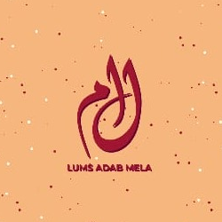

Featured

Why you should learn Video Editing
2022 DashboardIn this digital age where all forms of media are relevant to varying degrees in every single aspect of life, it is extremely important for anyone who wishes to truly stand out to be able to truly express themselves in something as simple as a video clip.

Hosting the Opening Ceremony for LAM '21
2021 DashboardThe annual flagship event of LLS (LUMS Literary Society) known as LAM (LUMS Adab Mela) officially begins today, and I write this after having been a host of its Opening Ceremony, and having the chance to interview the one and only Anwar Masood himself.